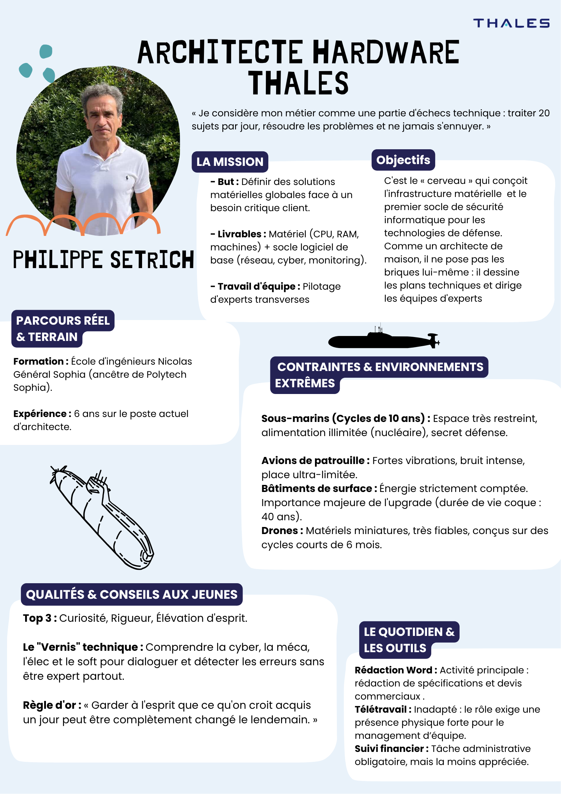

Projet non technique réalisé dans le cadre du BUT Réseaux & Télécommunications.

Rencontrer et interviewer un professionnel du domaine informatique, puis réaliser un poster récapitulatif de l’interview.
Ce projet m’a permis de mieux comprendre les métiers de l’informatique et de développer mes compétences en communication et en analyse. Il m’a également aidé à structurer un échange professionnel et à synthétiser des informations.